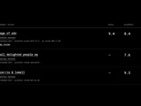
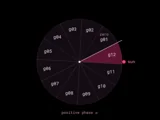
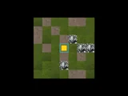
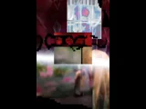
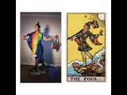

skip to content
KEVIN CUNANAN CHAPPELLE
KEVIN CUNANAN CHAPPELLE
[=]
home
[*]
collection
[?]
about
???
thoughts
UNLISTED COLLECTION
A few more corners of the site.

pitchfork
album scores & personal reviews

ephemeris
celestial instruments & a working notebook

trellis
a living garden

exp
experimental pages

divination is in our hands now
photography / 2018.05